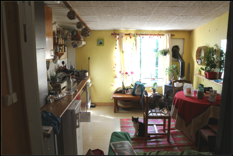
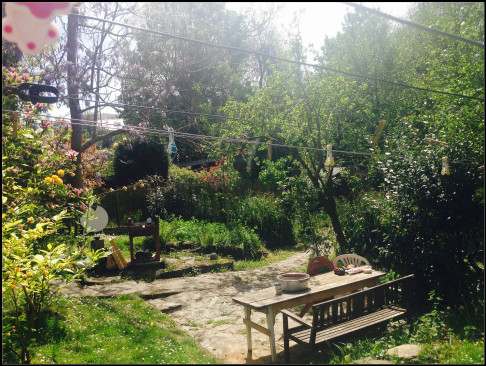

Un lit, un beau jardin, un repas,
Une maison nantaise ouverte aux nomades et philosophes
 Notre maison est l'une de celles à droite, les pieds dans l'eau. Et à 20 mn à pied du centre-ville.
Que ce soit pour échanger un repas ou que vous ayez besoin de repos, vous êtes les bienvenu(e)s à notre maison à Nantes.
A défault de dormir dans un cadre luxueux, voux aurez un lit, un chauffage ou un poêle à bois, une petite cuisine, un bon réseau wifi et les clés. Caroline et moi-même seront ravis de vous accueillir. Ou alors on vous le dira.
Notre maison est l'une de celles à droite, les pieds dans l'eau. Et à 20 mn à pied du centre-ville.
Que ce soit pour échanger un repas ou que vous ayez besoin de repos, vous êtes les bienvenu(e)s à notre maison à Nantes.
A défault de dormir dans un cadre luxueux, voux aurez un lit, un chauffage ou un poêle à bois, une petite cuisine, un bon réseau wifi et les clés. Caroline et moi-même seront ravis de vous accueillir. Ou alors on vous le dira.
Si le nomade Maxime Lathuilière nous a soumis l'idée d'une hackerhouse, nous privilégions le repos et les échanges autour d'un repas, sans aucune intention de production.
Maison que des équipes ou des colocataires pluridisciplinaires partagent pour accélérer leurs projets. Il s'agit à la fois d'un lieu de repos et d'émulation. Concept né dans la Silicon Valley.
Informations et localisation
La maison est presque toujours ouverte. Parfois, nous ne sommes pas là ou alors nous avons envie d'être seuls, Cuisine, table et poêle à bois.on vous le dira à ce moment là. Caroline est joignable au 0695945412 et moi même au 0695945412.
Couchage sur futon (1 place) ou matelas gonflable (2 places). Chauffage au gaz ou poêle à bois dans la pièce à côté. Cuisinière au gaz. Un petit espace pour se faire à manger. Belle vue sur le jardin. Canapé. Possibilité d'utiliser la machine à laver. Accès au jardin (3 tables, barbecue, ...). Vue depuis la chambre.Canoë (2places) et canoë kayak (1place).
Vous serez à 20 minutes à pied du centre ville, à coté de la rivière (du coup il fait parfois un humide), au début de la randonnée de l'Erdre et du chemin de grande randonnée qui passe devant la porte.
La journée, la maison se transforme régulièrement en espace de coworking Session de coworking dans le salon.
Session de coworking dans le salon.
Si vous avez votre propre sac de couchage, ça nous arrange.
Intentions et inspirations
Ce qui est important pur moi c'est qu'ils sachent qu'il y a un endroit où ils peuvent se reposer, bien manger, où ils sont les bienvenus. Lorsqu'ils sont là, j'ai besoin qu'ils soient autonomes et qu'ils prennent soin du lieu.
Échanger avec vous qui voyagez, lisez, réflechissez, concevez m'est vital. Bien souvent vous m'apportez des nouvelles du monde et, en plus du simple plaisir d'être ensemble, élargissez mes perspectives. Et tout comme le désir de repos, je pense que le désir d'amitié philosophique est un désir à ne pas négliger.